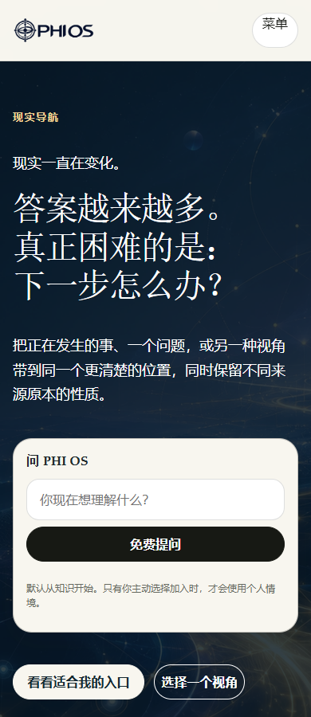
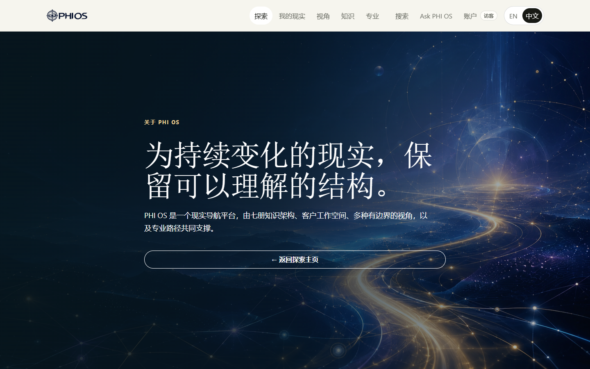

PIS-R1：本地首批改造，尚未整体完成
基线：8772ca0。附件 about.zip 未提供，按你明确指定的 main 工作。本页用于查看真实进度，不把机器测试、图片接受或本地截图当作全站人工验收。
已落地
- 20 张 SECONDARY 实际文件验证、登记与绑定完成：现有 162 张，64 张 REQUIRED 齐全。
- FIG 11F 按普通免费书籍总结图使用，取消额外定义审批卡点。
- 84 个入口文件盘点、现有 152 项视觉登记引用审计、双语公共词汇与编辑规则。
- 9 个现有入口增加双语说明和下一步链接；首页新标题，首页与带图的 About 子页采用满宽 Hero。
- 完整 npm run check（包含 postcheck）：PASS。本地浏览器记录：72/72；完成标志：true。范围仅为本批布局、语言与键盘检查，不是生产 E2E。
真正尚未完成
- 54 个入口未在本轮优先路由表中匹配，尚需对照其他现行路径记录；这不代表页面坏链或 404。历史 WPR 路径不能直接复活。
- 首批页面还需完成整页编辑、旧文案清理和视觉整合；知识、七册、方法、会员、专业、研究等后续批次未在本批改造。
- 41 项资源已有逐项用途建议，但都需在既有视觉权威中核对或补齐精确对象映射后再接入；建议不等于已使用。其余 152 项也未宣称零孤立资源。
- 全部 SEO、商业入口真实性、完整可访问性、逐页视觉与真实客户旅程仍需完成。
- 最终集中人工验收、部署后复测与 PIS-W76 冻结尚未完成。Stripe 仍按你指示暂停。
全部 W0–W76 状态 · 41 项逐项用途 · 浏览器记录 · 完整检查日志
实际本地截图
首页：手机

About：桌面

首批新增文字（中英对照）
index.html
从你真正关心的事开始。
PHI OS 把阅读、提问与反思连接到你正在面对的处境。先问一个问题，换一个角度观察，或通过阅读判断什么值得关注。下一步怎样走，仍由你决定。
PHI OS connects reading, questions and reflection around the situation you are actually facing. Start with a question, explore a different perspective, or read enough to decide what deserves your attention. You remain the person who chooses what to do.
下一步：免费问一个真实问题 → /knowledge/ask/；看看适合我的入口 → /explore/start/
按需要，选择理解的深度。
探索与精选书籍预览可以免费开始。书籍提供完整阅读路径，报告聚焦具体问题，专业服务则在需要时加入真人协助。决定之前，先在详情页确认是否开放以及包含什么。
Explore and selected book previews help you begin without a purchase. Books offer a longer reading path; reports focus on a particular question; professional services bring human involvement where it matters. Check each detail page for availability and what is included before making a commitment.
下一步：继续我的现实 → /reality/；预览七册书 → /books/；了解专业协助 → /professional/；了解学习路径 → /academy/
about/index.html
为什么要把答案重新连接起来？
事业、关系与金钱的建议往往各说各话，后果却发生在同一个生活里。PHI OS 希望帮助你保留整体处境：哪些已知，哪些是解释，哪些仍需核对。更多信息，只有连接到眼前的选择时才真正有用。
Advice about work, relationships and money often arrives separately, although the consequences meet in the same life. PHI OS exists to help you keep that context in view: what you know, what you are interpreting and what still needs to be checked. More information is useful only when you can relate it to the decision in front of you.
下一步：理解现实导航 → /about/reality-navigation/
七册书，一条相互连接的阅读路径。
七册从形成、运行、维持、扩展与分化，走到观察、导航与延续：现实如何形成，如何继续，我们怎样理解它、采取行动，再回来观察结果。你可以从最关心的问题开始，不必读完七册才能提问。
The books move through formation, interaction, continuity, expansion, differentiation, observation and navigation. They ask how a reality forms, how it keeps going, and how we can understand it well enough to act and return to review the result. You can enter through the question that matters to you; reading every volume is not a condition for asking a question.
下一步：找到适合开始的一册 → /books/
可以检验的框架，不是必须接受的信念。
PHI OS 不保证未来，也不替你作个人决定。一种方法可以提供视角，但不因此证明事实。研究主张、创办者的实践问题与方法的局限，都应允许被阅读、比较与检验。
PHI OS does not promise a certain future or make personal decisions on your behalf. A method can offer a perspective without proving a fact. The research, the founder’s practical questions and the limits of the approach should remain open to examination.
下一步：了解 Teresa Lee → /about/founder/；阅读核心论述 → /thesis.html；了解研究方向 → /research/
about/founder/index.html
从实际选择，走向更大的问题。
Teresa Lee 在财务规划、资源配置、组织重整与系统分析中的实践，反复遇到同一个问题：为什么人拥有更多信息，却仍难以看清自己的处境？PHI OS 把这个实践问题，连接到对现实如何形成、持续与变化的长期研究。
Teresa Lee’s work across financial planning, resource allocation, organizational restructuring and systems analysis brought a recurring question into focus: why can people have more information and still struggle to understand their situation? PHI OS connects that practical question with a longer study of how realities form, continue and change.
下一步：了解 PHI OS 为什么存在 → /about/
研究不同方法，而不把一种方法当作绝对答案。
传统读取系统以不同方式描述人的模式与时间。研究它们，并不意味着把解释视为必然发生的预测。更重要的问题是：每种方法看到了什么、遗漏了什么，以及它的解释如何与实际处境和可核对依据比较。
Historical reading systems offer different ways to describe human patterns and timing. Studying them does not require treating their interpretations as guaranteed predictions. The important question is what each method notices, what it leaves out and how its interpretation compares with the situation and available evidence.
下一步：了解可用的不同视角 → /perspectives/
为什么有了 AI，仍然需要导航。
AI 让生成答案和连接信息更容易。PHI OS 的核心论述进一步追问：怎样让答案继续连接证据、不断变化的处境，以及行动产生的后果？七册书展开这条阅读路径，平台则让人把真实问题带进来。
AI makes it easier to produce and connect answers. The PHI OS thesis asks what helps people keep those answers connected to evidence, changing circumstances and the consequences of action. The seven books develop that question into a reading journey, while the platform offers ways to bring a real question into it.
下一步：阅读研究命题 → /thesis.html；探索七册书 → /books/
about/reality-navigation/index.html
在决定之前，先看清现在。
先描述发生了什么、有什么可核对依据，再区分自己的感受与解释。理解限制，比较可能方向，然后选择可以承担的下一步。现实导航不预测必然发生的未来，也不规定你必须怎样生活。
Begin with what happened and what you can check. Separate it from how you feel and how you interpret it. Then identify limits, compare possible directions and choose a manageable next step. Reality navigation is not a prediction of what must happen or an instruction for how you must live.
下一步：带入一个问题 → /knowledge/ask/
行动之后，再回来看看。
处境改变以后，原本有用的方向也可能需要调整。保留最初的问题、采取的行动，以及后来发生的结果。持续使用的意义，是能够随时间重新理解这些关系，而不只是积累互不相连的答案。
A useful direction may need to change when circumstances change. Keep track of the question you started with, the action you chose and what happened afterwards. Continuity means being able to revisit that relationship over time, rather than collecting unrelated answers.
下一步：打开我的现实 → /reality/；了解使用步骤 → /explore/how-it-works/
thesis.html
更多智能，不等于更知道该往哪里走。
PHI OS 的研究命题是：答案变得丰富之后，还需要解决如何在变化的处境中作选择。一个答案需要情境、适用边界，以及把后果与实际发生的事情比较的方法。这是有待检验的命题，不是声称一个模型可以解决所有决定。
The research proposition behind PHI OS is that an abundance of answers creates a further problem: how to choose among them in a changing situation. An answer needs a context, a limit and a way to compare its consequences with what actually happens. This is a proposition to examine, not a claim that one model can settle every decision.
下一步：查看研究问题 → /research/
观察、行动与重新理解，应当相互连接。
昨天的描述，可能遗漏今天的变化。原本合理的选择，也可能在行动后显露新的限制。把观察与后来的结果连接起来，才能调整方向，而不必假装最初的答案已经确定。七册书进一步展开这套思路背后的问题。
A description made yesterday may miss a change today. A decision that seemed reasonable can reveal an unexpected constraint after action. Connecting observation with later results allows a direction to be revised without pretending that the original answer was certain. The seven books develop the wider questions behind this approach.
下一步：沿七册书继续阅读 → /books/；了解现实导航的方法 → /about/reality-navigation/
explore/index.html
不必先理解全部，才开始使用。
有问题，可以直接提问；想先阅读，可以从文章或免费书籍预览开始；想换个角度理解处境，可以体验一种视角，再与已知事实比较。每一个入口，都应帮助你找到适合的下一步。
If you have a question, start by asking it. If you prefer to read, begin with an article or a free book preview. If you want another way to reflect on a situation, explore a perspective and compare it with what you already know. Each starting point should help you choose the next one.
下一步：问一个问题 → /knowledge/ask/；预览一本书 → /books/；选择一种视角 → /perspectives/
explore/why-phios/index.html
生活的不同部分，不会独立变化。
工作的变化可能影响金钱、关系与恢复的时间。只针对一个部分的建议，可能遗漏其他地方的代价。PHI OS 帮助你追问这些部分如何相互影响，同时区分事实、解释与尚未得到回答的问题。
A change in work can affect money, relationships and the time available to recover. Advice aimed at only one part may miss the cost elsewhere. PHI OS helps you ask how these parts relate, while keeping facts, interpretations and open questions distinct.
下一步：从你的问题开始 → /knowledge/ask/；了解 PHI OS 的出发点 → /about/
explore/how-it-works/index.html
从能够观察结果的一小步开始。
描述处境，区分已知事实与解释，理解限制，再比较可能行动。在合适的情况下，选择可逆的一小步。之后回来看看什么改变了、什么仍需关注。有些决定需要合资格专业人士参与，而不只是再得到一个自动回答。
Describe the situation. Identify what is known and what is an interpretation. Consider constraints and compare possible actions. Where appropriate, choose a reversible step. Return to see what changed and what still needs attention. Some decisions require a qualified professional rather than another automated answer.
下一步：带入一个真实处境 → /reality/；了解何时需要专业协助 → /professional/
explore/start/index.html
按今天的需要，选择入口。
一个问题不一定需要一份报告，阅读也不一定需要购买，方法提供的视角不能代替专业意见。先选择最有用的一小步，了解更深入的选项包含什么、是否适合自己，再作决定。
A question does not require a report. Reading does not require a purchase. A method perspective does not replace professional advice. Start with the smallest useful step, and only choose a deeper option after you understand what it includes and whether it fits your situation.
下一步：我有一个问题 → /knowledge/ask/；我想学习 → /knowledge/；我想理解自己 → /perspectives/personal/；我想理解关系 → /perspectives/relationship/；我需要真人协助 → /professional/